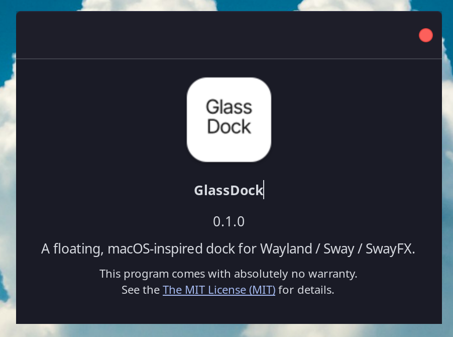

Pin and reorder apps
Keep favourite launchers close and arrange them your way.
Pin your apps, keep track of open windows, and choose where the dock sits and how it behaves.
Python · GTK 3 · gtk-layer-shell · MIT

Features
Keep favourite launchers close and arrange them your way.
Group running apps and follow windows through Sway IPC.
Set position, size, spacing, monitor, and auto-hide.
Adjust settings in GTK or use commands from keybindings.
Install
Run the installer in a Bash terminal. It can install, update, or remove GlassDock.
curl -fsSL https://raw.githubusercontent.com/Mandrusian/GlassDock/master/installer.sh | bash
The installer is open source. Package installation is optional and may use sudo.
Requirements
Requires a compositor with wlr-layer-shell, Python 3.9+, GTK 3, PyGObject, Pycairo, and gtk-layer-shell. Sway or SwayFX is recommended for window tracking.
GlassIcon Studio is included for changing user icon themes and app icons. View GlassIcon Studio